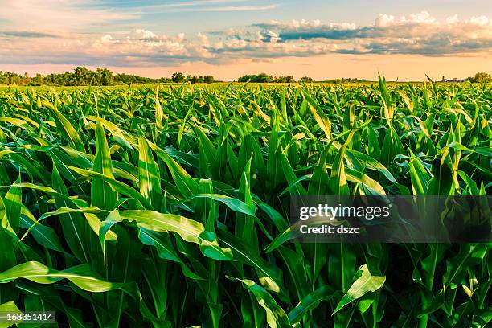
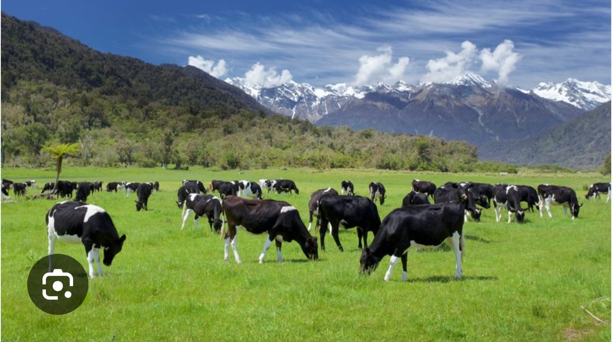

Maize is grown on largest part of the
Farm with almost 60 hectres of land
this is supported by irrigation during
the dry times to increase Yields
in times of demand

Goats are reared in large numbers ranging
between 1500 to 2000 goats these don't
require alot of land because they feed
on most network leaf venation

milk animals take the good number of animals
at the firm with over 500 kept at ago
these are reared in high numbers to meet the high
demand of milk both locally and internationally
This shows how different machines using Artificial inteligence do the following farm activites
This narrates more of the animal rearing which
gives knowledge about the requirements of the
business among others as listed below